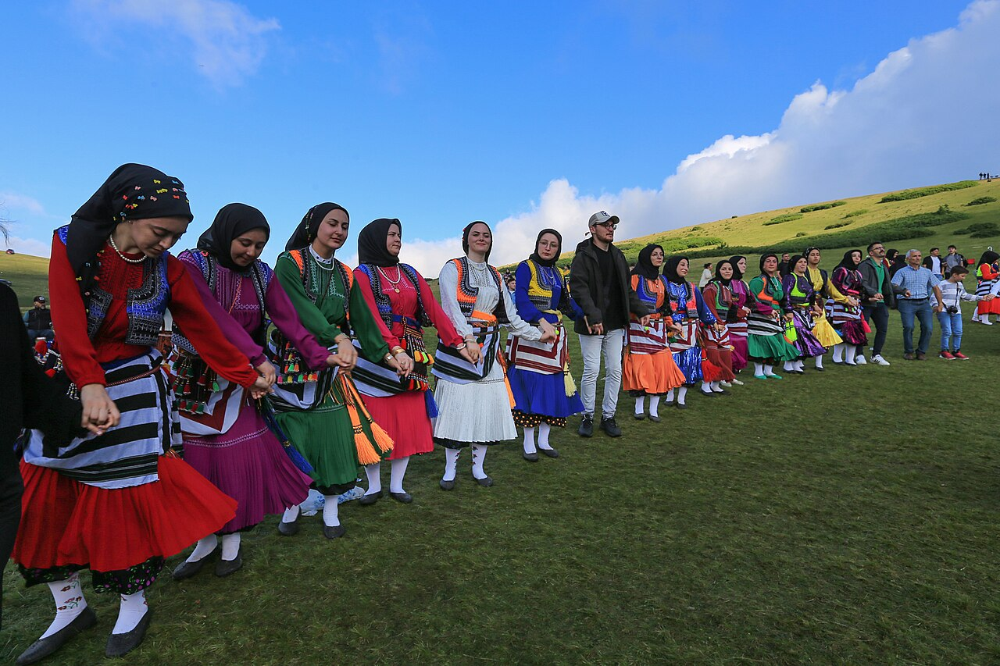
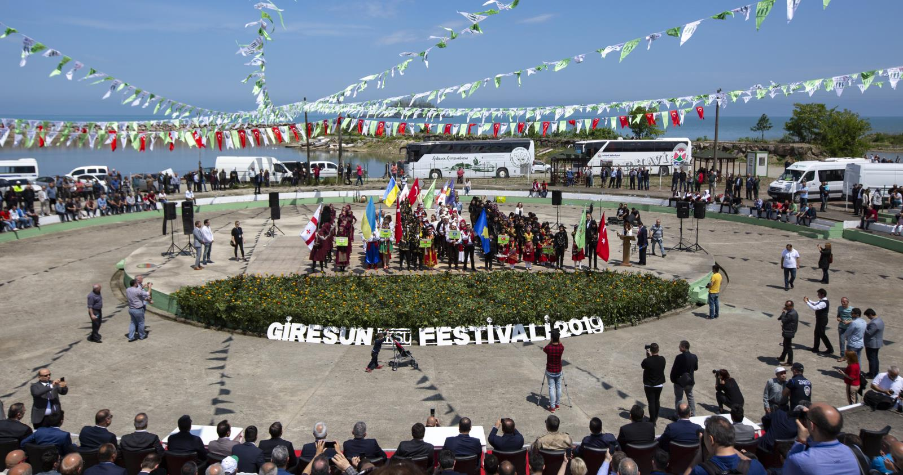
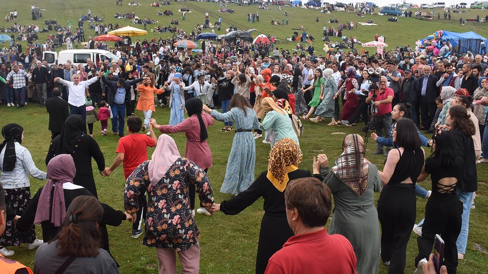
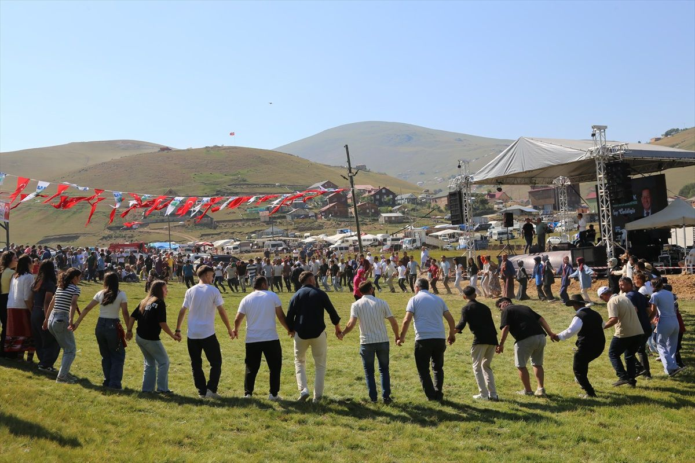
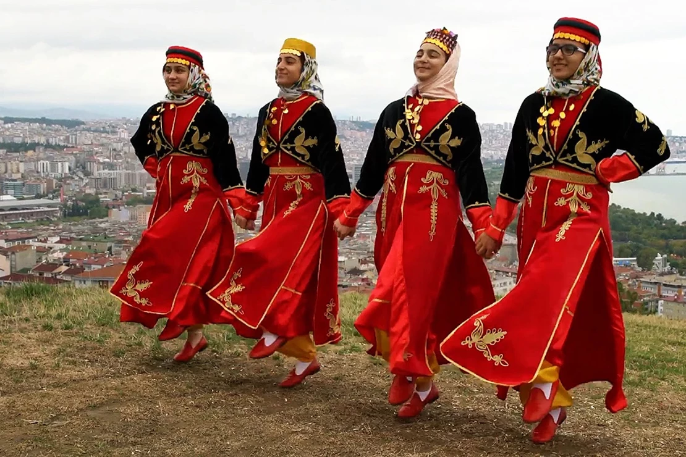

İşlem başarılı!

Tef (darbuka) ve kemençe eşliğinde icra edilen Horon, Karadeniz'in kültürel kimliğinin simgesidir. Düzensiz ritim yapısıyla diğer halk oyunlarından ayrılan Horon; omuz titremeleri, küçük sıçramalar ve hızlanan adımlarıyla izleyiciyi büyüler.
Giresun'da köylü gençler tarafından düğünlerde, festival alanlarında ve özel günlerde canla başla yaşatılan Horon, UNESCO tarafından Türkiye'nin somut olmayan kültürel mirasına alınmıştır.

Her yıl Mayıs ayında Giresun Adası'nda kutlanan bu antik festival, Amazon efsanelerine dayanan binlerce yıllık geleneği yaşatmaktadır. Türkiye'nin en özgün kültürel etkinlikleri arasındadır.

Her yıl Ağustos ayında düzenlenen kültür festivali; yöresel ürün stantları, horon gösterileri ve müzik etkinlikleriyle şehre büyük canlılık katar.

Kümbet, Kulakkaya ve diğer yaylalarda düzenlenen geleneksel yayla festivalleri; yöresel yemekler, at yarışları ve halk oyunları gösterileri sunar.

Giresun'un geleneksel kadın kıyafeti; renkli dokumalardan yapılmış uzun etek, işlemeli önlük ve başa takılan özel bağlamadan oluşur. Karadeniz'e özgü çivit mavi tonları ve kırmızı nakışlar bu kıyafetleri ayırt edici kılar.
Erkek kıyafetleri ise genellikle koyu renkli şalvar, bel kuşağı ve yöresel "puşi" başlık (yazma) ile tamamlanır. Bu kıyafetler festivallerde ve düğünlerde hâlâ özenle giyilmektedir.
Kurtuluş Savaşı'nda etkin rol oynayan ve TBMM'yi koruyan Giresunlu efsanevi milis komutanı.
19. yüzyılda yaşamış, Giresun yöresini şiirleriyle ölümsüzleştiren ozanlar arasında en çok anılan isimdir.
Giresun, kemençe ve Karadeniz türkülerinin icracısı pek çok halk müzikçisini yetiştirmiş; kültürel mirasa katkı sağlamıştır.
Giresun Üniversitesi ve yetişen akademisyenlerle şehir, eğitim ve bilim alanında da saygın bir konuma ulaşmıştır.